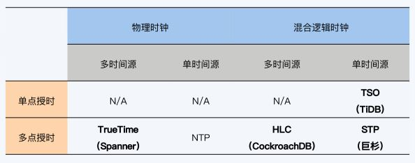

Overview [2] #

TSO 和 HLC 的区别[N AI] #
TSO (Timestamp Ordering) 和 HLC (Hybrid Logical Clock) 都是两种分布式系统中用于解决事件顺序问题的算法。 虽然两种算法都是基于时间戳的，但它们也有着一些区别。
时间同步 #
TSO 需要依赖全局的时间同步服务，如 NTP (Network Time Protocol)，保证所有机器的时钟是一致的。而 HLC 可以在没有全局时钟同步服务的情况下，通过增加逻辑时钟来维护全局时钟的顺序。 这就使得 HLC 比 TSO 更加灵活和适用于更多的场景。
时钟漂移 #
TSO 可能会受到时钟漂移的影响，当时钟出现漂移时，事件的顺序可能会受到影响。而 HLC 可以通过逻辑时钟来解决时钟漂移的问题。这使得 HLC 更加鲁棒，并且可以在更长的时间内保持正确的事件顺序。
时间精度 #
TSO 采用 64 位的时间戳，精度为纳秒级别。而 HLC 采用 64 位的时间戳和 16 位的逻辑时钟，精度为微秒级别，比 TSO 更高。这意味着 HLC 可以更准确地记录事件发生的顺序。
HLC #
HLC的特点和缺点 [1] #
HLC（Hybrid Logical Clock 混合逻辑时钟）结合了物理时间和逻辑时钟的优点，提供了下面3个特性：
- 如果a happened-before b, 则hlc(a) < hlc(b)。不过反之不成立
- HLC的时间戳占用的bit数不变
- 误差有上届。（其实就是NTP的最大误差，也就是所有机器的物理时间的最大误差）
HLC本质上来说还是一个逻辑时钟，所以它只能提供partial ordering，而不能提供total ordering。所以2个节点中发生的独立事件a和b，如果他们的timestamp在误差的上届范围内，是无法排序的。
HLC算法[2] #
参考 #
- CockRoachDB分布式事务 - HLC和MVCC的相映成趣
- 《05 | 全局时钟：物理时钟和逻辑时钟你Pick谁？》 分布式数据库30讲 王磊